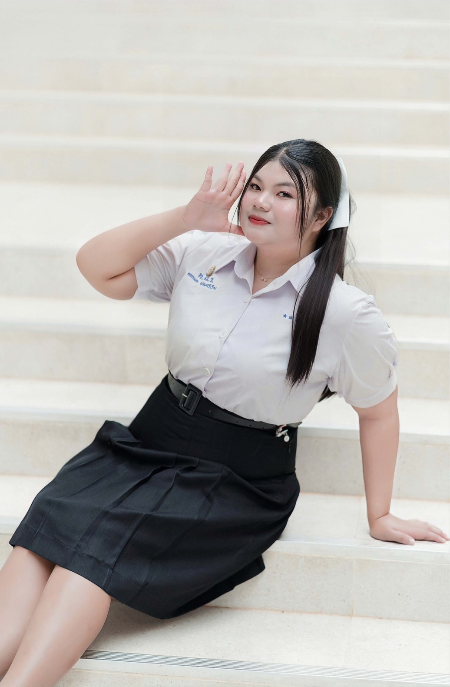
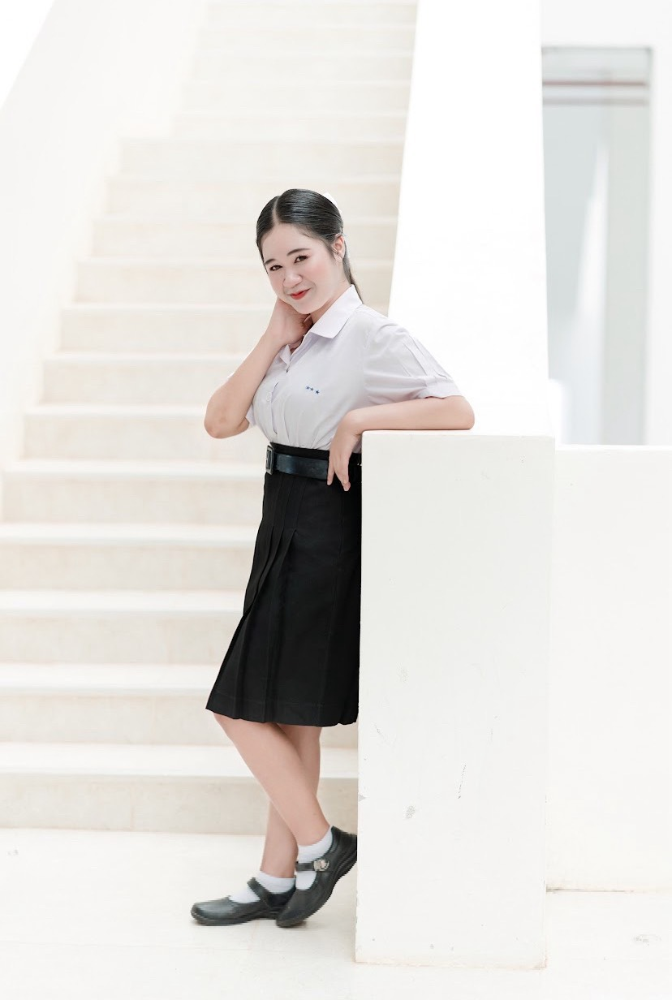

คณะศึกษาศาสตร์ วิชาเอกการประถมศึกษา
โรงเรียนทุ่งใหญ่เฉลิมราชอนุสรณ์รัชมังคลาภิเษก

No. 7

No. 19
สถานศึกษา: โรงเรียนทุ่งใหญ่เฉลิมราชอนุสรณ์รัชมังคลาภิเษก
ระดับการศึกษา: มัธยมศึกษาปีที่ 6
สถานศึกษา: โรงเรียนทุ่งใหญ่เฉลิมราชอนุสรณ์รัชมังคลาภิเษก
ระดับการศึกษา: มัธยมศึกษาปีที่ 6
โรงเรียนทุ่งใหญ่เฉลิมราชอนุสรณ์รัชมังคลาภิเษก
แผนการเรียน วิทย์-คณิต | เกรดเฉลี่ย 3.30
โรงเรียนทุ่งใหญ่เฉลิมราชอนุสรณ์รัชมังคลาภิเษก
แผนการเรียน วิทย์-คณิต | เกรดเฉลี่ย 3.25
สังเกตการสอนและทดลองสอนเด็ก เรียนรู้การจัดการเรียนการสอนและการดูแลเด็ก
เข้าร่วมการประกวดหนังสั้นในหัวข้อ “เด็ก To BE วิธีปฏิเสธยา”
ร่วมอนุรักษ์ทรัพยากรธรรมชาติและสิ่งแวดล้อม
ได้รับเลือกเป็นประธานสีน้ำเงิน ในการแข่งขันนาคาวรรจันทร์วารีหว้าหินเกมส์
ดูข่าวสารและฟังเพลง
“เป้าหมายใหญ่ ต้องใจแข็ง”